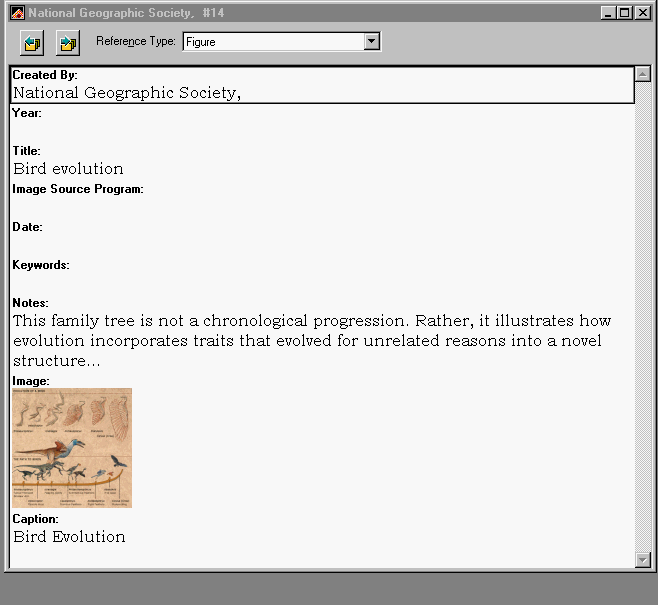

EndNote 6.0. Berkeley, CA: Thomson/ISI ResearchSoft, © 2002. CD-ROM, Manual (Endnote:... bibliographies and now manuscripts made easy.) xvi, 523pp. Price $239.95 by the Web; $299.95 by mail (Volume discounts available.) [Available in the UK from Adept Scientific plc., 6 Business Centre, West Avenue One, Letchworth, Herts, SG6 2HB, from Bilaney Consultants, St. Julians, Sevenoaks, Kent TN15 0RX, and from other re-sellers world wide.]IntroductionVersions 2.5, 3, 4 and 5 of EndNote have been reviewed here previously, most recently about eighteen months ago and for a more complete account of the general features new users are referred to the earlier reviews: version 2.5, version 3.0, version 4.0, and version 5.0. This review concentrates on what is new in version 6.0 Why "manuscripts made easy"?There are two main changes in this version of EndNote and the introduction of Microsoft Word templates for preparing papers is the major change. I counted 147 templates in the pop-up template selection menu, but none of them was for any of the key information science, information management or librarianship journals. However, templates can be modified and re-named, so if you regularly submit manuscripts to a specific journal, you can produce your own template from one that fits the requirements most closely. The templates can be accessed from within both EndNote and Word. In the former, simply click on Tools, select Manuscript Templates and then select the appropriate template from the pop-up list. Word will be launched with the appropriate template in place. In Word, select File, New and then the EndNote tab in the pop-up window. This presents you with a list of all of the templates, from which you select the appropriate one. Clearly, this new feature will be advantageous to those who use EndNote as their bibliographic software, since they will have to worry less about getting the format right for a particular journal, while at the same time being able to use the other features of EndNote. Not only does the feature provide you with templates, it also provides a Wizard, which collects information from the author so that the title, author statement and affiliation are presented appropriately. I tried out this feature with an existing paper and found it very straightforward to transfer my text from the existing Word file to the new template. I have to confess, however, that I doubt very much that I shall use this feature myself, simply because I contribute to a range of journals and conferences. Organizing imagesObviously, the key feature of any package for generating bibliographies is the ability to maintain and use files of references. However, it is quite common for an author to wish to use a diagram from one paper in another publication, or in a new edition, or in a research proposal to follow on from earlier work. EndNote 6 now allows you to maintain a file of any generic image type: this includes the common formats .bmp, .gif, .jpg, .png, and .tiff files but also various application files, such as Excel, PhotoShop and ChemDraw. Entries are made for such images in the same way as for bibliographical references and you can apply keywords and search for figures in the same way as for references. Figure 1 shows the layout of the EndNote reference for one of the images in the sample file provided with the program. 
Figure 1: EndNote entry for a figure There is no doubt that for research fields that are 'image intensive' - archaeology, the life sciences, crystallography, etc., etc. - this feature will be immensely useful and, I would expect, well-used. One nice touch is that the program automatically builds a list of figures for submission with the paper. StylesThere are now more than 700 bibliographic styles available for EndNote - and the Web site lists them in a well-ordered fashion, with the capability of filtering by subject. Still, however, only two styles appear under the 'information science' rubric - Library Quarterly and Information Systems Journal. It is, of course, possible to locate styles that are close to one's needs and then edit them, but I would have thought that, by now, some public-spirited persons would have provided the styles for other major journals in the field. Science and medicine continue to be the best-provided for areas in this respect. Accessing online sourcesIf you use Web of Science or any of the other major databases, EndNote is a godsend. It will download searches very quickly and although the organization into document types is not perfect, it is a great deal better than the old days of re-typing all the references one found! You can also search public catalogues and it took me about one minute to set up and search for all items in the University of Newcastle catalogue that had 'sociology' and 'knowledge' in any field. I could readily construct an extensive bibliography on the subject of the 'sociology of knowledge' by combing through the catalogues available in the UK. ConclusionThe two new features in this version of EndNote make it very well worthwhile the upgrade price and, if you haven't used it previously, you might consider buying it, or urging your institution to take out a site-wide purchase. I have now used most of the packages of this kind and I keep EndNote as my personal system - that's the best recommendation that I can make! Professor Tom Wilson
|